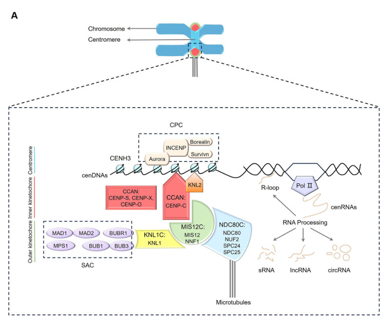

SORBI_3003G204000 (UniProt C5XPJ5) is an uncharacterized 188-residue Sorghum bicolor protein that is a homolog of the kinetochore protein SPC24, a subunit of the NDC80 outer-kinetochore complex. It belongs to the SPC24-like family (InterPro IPR044951) and to PANTHER family PTHR35730 ("kinetochore protein SPC24 homolog-related"), whose sole reviewed member is the Arabidopsis SPC24 homolog (Q67XT3, gene SPC24/MUN). SPC24 proteins are short proteins with an N-terminal coiled-coil and a C-terminal RWD-like globular domain that, paired with SPC25, anchors the microtubule-binding NDC80-NUF2 module of the NDC80 complex to the inner kinetochore. The NDC80 complex (NDC80, NUF2, SPC24, SPC25) localizes to the outer kinetochore, forms the principal end-on attachment site for spindle microtubules, and is required for accurate chromosome segregation during cell division and for spindle-checkpoint signaling. In Arabidopsis the SPC24 ortholog MUN is essential: loss of function causes embryo arrest/lethality, DNA aneuploidy, defects in chromosome segregation and a reduced cell-division rate. By orthology, SORBI_3003G204000 is predicted to function as the sorghum SPC24 subunit of the NDC80 kinetochore complex; its function has not been experimentally characterized in sorghum.
| GO Term | Evidence | Action | Reason |
|---|---|---|---|
|
GO:0051983
regulation of chromosome segregation
|
IEA
GO_REF:0000002 |
ACCEPT |
Summary: Sole annotation, an electronic (IEA) inference from the InterPro2GO mapping of IPR044951 "SPC24-like" to GO:0051983. The protein is a bona fide SPC24 homolog (InterPro IPR044951; PANTHER PTHR35730, whose only reviewed member is the Arabidopsis SPC24/MUN protein). SPC24 is a subunit of the NDC80 outer-kinetochore complex that attaches spindle microtubules to the kinetochore and is required for chromosome segregation [PMID:29356153].
Reason: The family assignment is well supported: the entry carries InterPro IPR044951 (SPC24-like) and PANTHER PTHR35730, whose single reviewed member is the Arabidopsis SPC24 homolog (Q67XT3, gene SPC24/MUN). The experimentally characterized plant ortholog MUN is a functional SPC24 subunit of the NDC80 kinetochore complex required for proper chromosome segregation [PMID:29356153], and the partner subunit NUF2 likewise governs chromosome segregation in plant mitosis [PMID:33993566]. The annotated direction (involvement in chromosome segregation) is therefore correct, and as a conservative, curated InterPro2GO inference applied electronically to an organism with no direct experimental data it should be retained. Critically, however, this single IEA mapping is incomplete: it captures a biological-process term but omits the most characteristic feature of an SPC24 protein — its localization as a structural subunit of the NDC80 complex at the kinetochore. Those defining cellular-component annotations (GO:0031262 NDC80 complex; GO:0000776 kinetochore) are added below as orthology-based (ISS) NEW annotations rather than left implicit. The IEA term "regulation of chromosome segregation" itself is a defensible parent-level statement (the NDC80 complex both executes microtubule attachment and contributes to spindle-checkpoint regulation of the metaphase-to-anaphase transition), so it is accepted as-is rather than modified.
Supporting Evidence:
PMID:29356153
The NDC80 complex, composed of four proteins, NDC80, NUF2, SPC24 and SPC25, is localized at the outer kinetochore and connects spindle fibers to the kinetochore.
PMID:29356153
Our results support that MUN is a functional homolog of SPC24 in Arabidopsis, which is required for proper cell division.
|
|
GO:0031262
Ndc80 complex
|
ISS
PMID:29356153 MUN (MERISTEM UNSTRUCTURED), encoding a SPC24 homolog of NDC... |
NEW |
Summary: Proposed orthology-based (ISS) annotation. SORBI_3003G204000 is a 1:1 plant SPC24 ortholog (PANTHER PTHR35730:SF2, the same subfamily as the experimentally characterized Arabidopsis SPC24/MUN, Q67XT3), and SPC24 is a defining structural subunit of the four-protein NDC80 complex.
Reason: The most characteristic and currently-missing annotation for this protein. The Arabidopsis ortholog (WITH/FROM UniProtKB:Q67XT3) is an experimentally verified component of the NDC80 complex (interacts with AtNDC80, AtNUF2 and AtSPC25 by Y2H and co-IP) [PMID:29356153], and complex membership is the conserved, lineage-independent property of all SPC24 proteins. The sorghum protein falls in the same plant SPC24 PANTHER subfamily [file:interpro/panther/PTHR35730/PTHR35730-curation.md], so ISS transfer of NDC80-complex membership from Q67XT3 is well justified. This complements, and is more specific than, the existing GO:0051983 BP annotation.
Supporting Evidence:
PMID:29356153
Interactions among the components of the NDC80 complex were confirmed in a yeast two-hybrid assay and in planta co-immunoprecipitation.
PMID:29356153
The NDC80 complex, composed of four proteins, NDC80, NUF2, SPC24 and SPC25, is localized at the outer kinetochore and connects spindle fibers to the kinetochore.
|
|
GO:0000776
kinetochore
|
ISS
PMID:29356153 MUN (MERISTEM UNSTRUCTURED), encoding a SPC24 homolog of NDC... |
NEW |
Summary: Proposed orthology-based (ISS) annotation. As an SPC24/NDC80-complex subunit, SORBI_3003G204000 is predicted to localize to the kinetochore, mirroring its experimentally localized Arabidopsis ortholog SPC24/MUN.
Reason: The Arabidopsis ortholog (WITH/FROM UniProtKB:Q67XT3) localizes to the kinetochore/centromere, colocalizing with the centromeric histone variant CENH3 [PMID:29356153], and outer-kinetochore localization is the defining, conserved property of the NDC80 complex. Given the 1:1 plant-SPC24 orthology [file:interpro/panther/PTHR35730/PTHR35730-curation.md], ISS transfer of kinetochore localization is justified. This is the cellular-component complement to the existing chromosome-segregation BP annotation and is currently absent from the GOA record.
Supporting Evidence:
PMID:29356153
MUN is co-localized at the centromere with HTR12/CENH3, which is a centromere-specific histone variant.
PMID:29356153
The NDC80 complex, composed of four proteins, NDC80, NUF2, SPC24 and SPC25, is localized at the outer kinetochore and connects spindle fibers to the kinetochore.
|
Q: Does SORBI_3003G204000 physically associate with sorghum NDC80, NUF2 and SPC25 to form a functional NDC80 kinetochore complex, as shown for the Arabidopsis orthologs?
Q: Is SORBI_3003G204000 essential for sorghum viability and embryogenesis, mirroring the embryonic lethality of Arabidopsis MUN null mutants?
Experiment: Tag SORBI_3003G204000 with a fluorescent reporter and test for centromere or kinetochore localization (co-localization with CENH3) in dividing sorghum cells.
Hypothesis: SORBI_3003G204000 localizes to the kinetochore/centromere as a subunit of the NDC80 complex.
Type: fluorescence microscopy / co-localization
Experiment: Assay physical interaction of SORBI_3003G204000 with sorghum SPC25, NDC80 and NUF2 by yeast two-hybrid and in planta co-immunoprecipitation.
Hypothesis: SORBI_3003G204000 assembles into the NDC80 complex via SPC25 pairing.
Type: protein interaction
Experiment: Generate CRISPR/Cas9 loss-of-function alleles of SORBI_3003G204000 and assess chromosome-segregation fidelity, ploidy and viability.
Hypothesis: Loss of SORBI_3003G204000 causes chromosome mis-segregation and reduced viability, as for Arabidopsis MUN.
Type: reverse genetics / phenotypic analysis
This report is retrieval-only and is generated directly from Asta results.
search_papers_by_relevance with snippet_search.The research report should be a detailed narrative explaining the function, biological processes, and localization of the gene product. Citations should be given for all claims.
You should prioritize authoritative reviews and primary scientific literature when conducting research. You can supplement
this with annotations you find in gene/protein databases, but these can be outdated or inaccurate.
We are specifically interested in the primary function of the gene - for enzymes, what reaction is catalyzed, and what is the substrate specificity? For transporters, what is the substrate? For structural proteins or adapters, what is the broader structural role? For signaling molecules, what is the role in the pathway.
We are interested in where in or outside the cell the gene product carries out its function.
We are also interested in the signaling or biochemical pathways in which the gene functions. We are less interested in broad pleiotropic effects, except where these elucidate the precise role.
Include evidence where possible. We are interested in both experimental evidence as well as inference from structure, evolution, or bioinformatic analysis. Precise studies should be prioritized over high-throughput, where available.
The research target in this report is strictly the Sorghum bicolor gene model SORBI_3003G204000, corresponding to UniProt accession C5XPJ5, described in UniProt as an uncharacterized protein with an SPC24-like domain (InterPro: IPR044951, per the user-provided UniProt context). No peer‑reviewed papers explicitly naming C5XPJ5 or SORBI_3003G204000 were retrievable in this run; therefore, functional statements about the sorghum protein are necessarily domain/orthology-based inferences from conserved SPC24 biology in plants and eukaryotes, and are labeled as such. (kozgunova2025recentadvancesin pages 3-5, shin2018mun(meristemunstructured) pages 19-22)
The kinetochore is a large multi-protein assembly that forms on centromeric chromatin and mediates chromosome segregation by linking chromosomes to spindle microtubules during cell division. Plant kinetochore models, as in other eukaryotes, are commonly described as an inner kinetochore associated with centromeric chromatin and an outer kinetochore that engages microtubules and checkpoint machinery. (xie2024plantkinetochorecomplex pages 1-3)
A core outer-kinetochore organizational module is the KMN network, comprising KNL1 complex, MIS12 complex, and NDC80 complex, which collectively creates the principal microtubule-binding interface of the kinetochore. (xie2024plantkinetochorecomplex pages 1-3, xie2024plantkinetochorecomplex media 22acbc82)
The NDC80 complex is a conserved heterotetramer composed of NDC80 (Hec1), NUF2, SPC24, and SPC25. In plants, as in other systems, NDC80/NUF2 provide the microtubule-binding “head,” while SPC24/SPC25 connect the complex to inner kinetochore receptors (via the MIS12 side of the KMN network), enabling force transmission from microtubules to chromosomes. (shin2018mun(meristemunstructured) pages 1-4, kozgunova2025recentadvancesin pages 3-5)
Structural/biophysical summaries of the complex describe a long coiled-coil “rod” linking the NDC80/NUF2 head to the SPC24/SPC25 C-terminal head, consistent with a predominantly structural adaptor function rather than enzymatic catalysis. (ustinov2020proteincomplexndc80 pages 2-5)
No direct experimental evidence (e.g., mutant phenotype, localization microscopy, interaction proteomics) was found in the retrieved literature that explicitly references SORBI_3003G204000 or UniProt C5XPJ5. Accordingly, no sorghum-specific phenotype or pathway assignment can be stated from primary literature in this run. (shin2018mun(meristemunstructured) pages 19-22)
Given the SPC24-like domain annotation and strong conservation of the NDC80 complex in plants, the most parsimonious functional assignment is that C5XPJ5 encodes a putative SPC24 subunit of the NDC80 outer-kinetochore complex. In this role, it would be expected to:
These inferences are consistent with experimentally validated roles for plant SPC24 homologs described below.
Because SORBI_3003G204000 is uncharacterized in the retrieved literature, the strongest functional evidence comes from the experimentally characterized Arabidopsis SPC24 homolog MUN (MERISTEM UNSTRUCTURED; AtSPC24).
In Arabidopsis, MUN/AtSPC24 is supported as an SPC24 ortholog and NDC80 complex member, with biochemical interaction evidence: SPC24 interacts with SPC25, and co-immunoprecipitation supports association of SPC24 with NDC80, NUF2, and SPC25 (with SPC25 acting as an interaction “bridge” within the complex). (shin2018mun(meristemunstructured) pages 10-12)
Inference for sorghum: the closest functional prediction is that sorghum C5XPJ5 participates in analogous protein–protein interactions with sorghum orthologs of SPC25, NDC80, and NUF2, and likely interfaces with MIS12/KMN components through the SPC24/SPC25 end of the complex. (kozgunova2025recentadvancesin pages 3-5, ustinov2020proteincomplexndc80 pages 2-5)
MUN/AtSPC24 shows nuclear dot-like localization consistent with centromeres/kinetochores, including co-localization with the centromeric histone CENH3/HTR12 in Arabidopsis. (shin2018mun(meristemunstructured) pages 7-10, shin2018mun(meristemunstructured) pages 10-12)
Inference for sorghum: a conserved SPC24-like protein would be expected to localize to kinetochores during cell division. (kozgunova2025recentadvancesin pages 3-5, xie2024plantkinetochorecomplex media 22acbc82)
Arabidopsis genetic evidence indicates SPC24 is essential for chromosome segregation and development:
Inference for sorghum: if SORBI_3003G204000 encodes an SPC24 subunit, strong loss-of-function would plausibly cause severe mitotic defects and potentially lethality or sterility phenotypes, consistent with essentiality observed for NDC80 subunits in plants. This remains a hypothesis until validated in sorghum. (kozgunova2025recentadvancesin pages 3-5)
A 2023 kinetochore-focused review of plant meiosis reiterates that kinetochores are built from >100 structural and regulatory proteins, and highlights that only a subset of canonical eukaryotic kinetochore components have been experimentally characterized in plants to date. It also notes divergence of inner kinetochore composition: the vertebrate CCAN has 16 CENP proteins, and 12/16 CCAN components cannot be identified by homology in plants, emphasizing both conservation (outer kinetochore/KMN) and innovation (inner kinetochore) in plant lineages. (zhou2023exploringplantmeiosis pages 4-7)
For NDC80 specifically, the 2023 review explicitly defines the complex (Ndc80, Nuf2, Spc24, Spc25) and notes its role in microtubule binding and recruitment of checkpoint factors (e.g., MPS1), consistent with NDC80 being a key scaffold/signaling interface at the outer kinetochore. (zhou2023exploringplantmeiosis pages 4-7)
A highly cited 2024 review on plant centromeres situates NDC80 and SPC24 among known plant kinetochore proteins and emphasizes that kinetochore architecture (inner CCAN interacting with outer KMN) underpins microtubule attachment. The review also frames applications: centromere/kinetochore knowledge enables haploid induction via centromere-mediated genome elimination (a tool for crop improvement) and informs efforts toward stably inherited synthetic/artificial chromosomes. (naish2024thestructurefunction pages 1-2)
A 2024 review in Frontiers in Plant Science summarizes plant kinetochore composition, function, and regulation, reiterating the inner/outer kinetochore organization and the centrality of NDC80C (including SPC24) to outer-kinetochore microtubule attachment and kinetochore signaling. The paper also highlights that kinetochore proteins interact with centromeric DNA and RNA, reflecting expanding interest in centromere transcription and RNA-mediated regulation in kinetochore biology. (xie2024plantkinetochorecomplex pages 1-3)
Although SORBI_3003G204000 itself has no direct application literature in this run, centromere/kinetochore biology (the pathway in which SPC24-like proteins function) has active translational relevance:
Multiple authoritative reviews converge on a core conclusion: outer kinetochore architecture is conserved, with NDC80C functioning as the primary microtubule-attachment module, whereas inner kinetochore composition in plants shows lineage-specific divergence. (xie2024plantkinetochorecomplex pages 1-3, naish2024thestructurefunction pages 1-2, zhou2023exploringplantmeiosis pages 4-7)
Within this conserved module, SPC24’s role is best understood as a non-enzymatic structural adaptor: it contributes to assembly of the NDC80 complex and couples the microtubule-binding head (NDC80/NUF2) to inner kinetochore receptors via the SPC24/SPC25 end, thereby enabling force transmission and proper chromosome movement. This mechanistic framing is consistent across structural/biochemical summaries of NDC80 and plant-specific SPC24 genetics. (kozgunova2025recentadvancesin pages 3-5, ustinov2020proteincomplexndc80 pages 2-5)
These quantitative statements inform expectations about conservation and the likely essentiality of core outer-kinetochore components like SPC24.
A schematic of the plant kinetochore places NDC80C (NDC80/NUF2/SPC24/SPC25) in the outer kinetochore, connected to MIS12C and the spindle microtubule interface—supporting the predicted cellular role/location for an SPC24-like sorghum protein. (xie2024plantkinetochorecomplex media 22acbc82)
| Evidence tier | Identity | Domain architecture | Predicted complex membership | Molecular function | Biological process | Subcellular localization | Key interaction partners | Phenotypes from plant orthologs | Strength/Type of evidence |
|---|---|---|---|---|---|---|---|---|---|
| Direct for Sorghum gene | UniProt C5XPJ5 = uncharacterized protein; ORF/gene name SORBI_3003G204000; organism Sorghum bicolor; no sorghum-specific functional paper retrieved (shin2018mun(meristemunstructured) pages 19-22) | SPC24-like domain reported for target; sorghum SPC24-like homolog presence in grasses supported indirectly by plant SPC24 homolog listings (shin2018mun(meristemunstructured) pages 19-22) | Putative NDC80/KMN outer-kinetochore component, but not experimentally shown in sorghum (kozgunova2025recentadvancesin pages 3-5, xie2024plantkinetochorecomplex pages 1-3) | Structural/adaptor role rather than enzyme; likely contributes to kinetochore assembly/linkage, not catalysis (kozgunova2025recentadvancesin pages 3-5, ustinov2020proteincomplexndc80 pages 2-5) | Likely chromosome segregation during cell division; sorghum-specific proof unavailable (kozgunova2025recentadvancesin pages 3-5, xie2024plantkinetochorecomplex pages 1-3) | Expected centromere/kinetochore in dividing nuclei; not directly shown in sorghum (kozgunova2025recentadvancesin pages 3-5, xie2024plantkinetochorecomplex pages 1-3) | Expected SPC25, NDC80, NUF2, MIS12-complex proteins; no sorghum interaction data found (shin2018mun(meristemunstructured) pages 10-12, kozgunova2025recentadvancesin pages 3-5) | None directly reported for SORBI_3003G204000 | Low-direct evidence; database/domain-based assignment only |
| Inference from plant SPC24 orthologs (Arabidopsis MUN/AtSPC24) | Arabidopsis MUN/AT3G08880 is an SPC24 homolog and NDC80-complex subunit (shin2018mun(meristemunstructured) pages 1-4, shin2018mun(meristemunstructured) pages 7-10) | Coiled-coil region plus C-terminal globular RWD domain; predicted 3D homology to known Spc24 proteins (shin2018mun(meristemunstructured) pages 7-10) | Canonical NDC80 tetramer with NDC80, NUF2, SPC24, SPC25 (shin2018mun(meristemunstructured) pages 1-4, shin2018mun(meristemunstructured) pages 10-12) | Kinetochore structural linker: SPC24-SPC25 connects to inner kinetochore/MIS12 side of NDC80 complex (shin2018mun(meristemunstructured) pages 1-4, kozgunova2025recentadvancesin pages 3-5) | Essential for mitotic chromosome segregation, cell division, embryo development, meristem growth (shin2018mun(meristemunstructured) pages 1-4, shin2018mun(meristemunstructured) pages 7-10, shin2018mun(meristemunstructured) pages 10-12) | Nuclear centromeric/kinetochore dots; co-localizes with CENH3/HTR12 (shin2018mun(meristemunstructured) pages 7-10, shin2018mun(meristemunstructured) pages 10-12) | Interacts with SPC25; co-IPs with NDC80, NUF2, SPC25 (shin2018mun(meristemunstructured) pages 10-12) | Hypomorphic mutants: stunted growth, low cell division, aneuploidy, lagging chromosomes, micronuclei; nulls: embryo arrest/zygotic lethality (shin2018mun(meristemunstructured) pages 1-4, shin2018mun(meristemunstructured) pages 7-10, shin2018mun(meristemunstructured) pages 10-12) | Moderate-strong evidence from plant ortholog experiments |
| General NDC80 complex knowledge | SPC24 is one of four conserved NDC80-complex subunits in eukaryotes (kozgunova2025recentadvancesin pages 3-5, ustinov2020proteincomplexndc80 pages 2-5) | NDC80 complex has long coiled-coil rod; Hec1/Ndc80-Nuf2 microtubule-binding head and Spc24-Spc25 C-terminal head (ustinov2020proteincomplexndc80 pages 2-5) | Outer kinetochore KMN network member, linked with MIS12C and KNL1C (kozgunova2025recentadvancesin pages 3-5, xie2024plantkinetochorecomplex pages 1-3, xie2024plantkinetochorecomplex media 22acbc82) | Non-enzymatic structural role: links kinetochore to spindle microtubules and transmits force for chromosome movement (kozgunova2025recentadvancesin pages 3-5, ustinov2020proteincomplexndc80 pages 2-5) | Kinetochore-microtubule attachment, chromosome congression/segregation, checkpoint-associated outer-kinetochore function (ustinov2020proteincomplexndc80 pages 2-5, xie2024plantkinetochorecomplex pages 1-3) | Outer kinetochore at centromeres on dividing chromosomes (kozgunova2025recentadvancesin pages 3-5, xie2024plantkinetochorecomplex pages 1-3, xie2024plantkinetochorecomplex media 22acbc82) | Spc24-Spc25 associates with MIS12-side kinetochore proteins; complex includes NDC80 and NUF2 (kozgunova2025recentadvancesin pages 3-5, ustinov2020proteincomplexndc80 pages 2-5) | Loss of NDC80-complex integrity generally causes segregation defects and lethality in plants/other eukaryotes (shin2018mun(meristemunstructured) pages 1-4, ustinov2020proteincomplexndc80 pages 2-5) | Strong comparative/structural evidence; not gene-specific |
Table: This table summarizes the evidence tiers for annotating Sorghum bicolor SORBI_3003G204000/UniProt C5XPJ5, separating direct sorghum evidence from ortholog-based inference and broader NDC80 complex knowledge. It is useful for distinguishing what is experimentally supported versus what is predicted from conserved SPC24 biology.
Most likely primary function (high-confidence inference): structural component of the outer kinetochore NDC80 complex, required for robust kinetochore–microtubule attachment and faithful chromosome segregation. (kozgunova2025recentadvancesin pages 3-5, ustinov2020proteincomplexndc80 pages 2-5)
Likely cellular compartment: nucleus, at centromere/kinetochore foci in dividing cells. (shin2018mun(meristemunstructured) pages 7-10, xie2024plantkinetochorecomplex media 22acbc82)
Key predicted partners: SPC25 (direct), NDC80, NUF2, and MIS12-side KMN proteins (indirect via NDC80C-KMN architecture). (shin2018mun(meristemunstructured) pages 10-12, kozgunova2025recentadvancesin pages 3-5)
Given the absence of direct sorghum literature for C5XPJ5 in this run, the most informative next steps would be: (i) subcellular localization (e.g., C5XPJ5-GFP in dividing tissues), (ii) interaction mapping (co-IP/AP-MS to test NDC80C membership), and (iii) genetic perturbation (CRISPR knockout or hypomorphs) to test for chromosome segregation defects/aneuploidy and developmental phenotypes analogous to Arabidopsis MUN. These steps are motivated by the strong ortholog evidence base and the essential phenotypes of SPC24 disruption in plants. (shin2018mun(meristemunstructured) pages 7-10, shin2018mun(meristemunstructured) pages 10-12, kozgunova2025recentadvancesin pages 3-5)
References
(kozgunova2025recentadvancesin pages 3-5): Elena Kozgunova. Recent advances in plant kinetochore research. Frontiers in Cell and Developmental Biology, Jan 2025. URL: https://doi.org/10.3389/fcell.2024.1510019, doi:10.3389/fcell.2024.1510019. This article has 3 citations.
(shin2018mun(meristemunstructured) pages 19-22): Jinwoo Shin, Goowon Jeong, Jong‐Yoon Park, Hoyeun Kim, and Ilha Lee. Mun (meristem unstructured), encoding a spc24 homolog of ndc80 kinetochore complex, affects development through cell division in arabidopsis thaliana. The Plant Journal, 93:977–991, Mar 2018. URL: https://doi.org/10.1111/tpj.13823, doi:10.1111/tpj.13823. This article has 31 citations.
(xie2024plantkinetochorecomplex pages 1-3): Yuqian Xie, Mingliang Wang, Beixin Mo, and Chao Liang. Plant kinetochore complex: composition, function, and regulation. Frontiers in Plant Science, Oct 2024. URL: https://doi.org/10.3389/fpls.2024.1467236, doi:10.3389/fpls.2024.1467236. This article has 3 citations.
(xie2024plantkinetochorecomplex media 22acbc82): Yuqian Xie, Mingliang Wang, Beixin Mo, and Chao Liang. Plant kinetochore complex: composition, function, and regulation. Frontiers in Plant Science, Oct 2024. URL: https://doi.org/10.3389/fpls.2024.1467236, doi:10.3389/fpls.2024.1467236. This article has 3 citations.
(shin2018mun(meristemunstructured) pages 1-4): Jinwoo Shin, Goowon Jeong, Jong‐Yoon Park, Hoyeun Kim, and Ilha Lee. Mun (meristem unstructured), encoding a spc24 homolog of ndc80 kinetochore complex, affects development through cell division in arabidopsis thaliana. The Plant Journal, 93:977–991, Mar 2018. URL: https://doi.org/10.1111/tpj.13823, doi:10.1111/tpj.13823. This article has 31 citations.
(ustinov2020proteincomplexndc80 pages 2-5): N. B. Ustinov, A. V. Korshunova, and N. B. Gudimchuk. Protein complex ndc80: properties, functions, and possible role in pathophysiology of cell division. Biochemistry (Moscow), 85:448-462, Apr 2020. URL: https://doi.org/10.1134/s0006297920040057, doi:10.1134/s0006297920040057. This article has 27 citations.
(shin2018mun(meristemunstructured) pages 10-12): Jinwoo Shin, Goowon Jeong, Jong‐Yoon Park, Hoyeun Kim, and Ilha Lee. Mun (meristem unstructured), encoding a spc24 homolog of ndc80 kinetochore complex, affects development through cell division in arabidopsis thaliana. The Plant Journal, 93:977–991, Mar 2018. URL: https://doi.org/10.1111/tpj.13823, doi:10.1111/tpj.13823. This article has 31 citations.
(shin2018mun(meristemunstructured) pages 7-10): Jinwoo Shin, Goowon Jeong, Jong‐Yoon Park, Hoyeun Kim, and Ilha Lee. Mun (meristem unstructured), encoding a spc24 homolog of ndc80 kinetochore complex, affects development through cell division in arabidopsis thaliana. The Plant Journal, 93:977–991, Mar 2018. URL: https://doi.org/10.1111/tpj.13823, doi:10.1111/tpj.13823. This article has 31 citations.
(zhou2023exploringplantmeiosis pages 4-7): Kang-Di Zhou, Cai-Xia Zhang, Fu-Rong Niu, Hao-Chen Bai, Dan-Dan Wu, Jia-Cheng Deng, Hong-Yuan Qian, Yun-Lei Jiang, and Wei Ma. Exploring plant meiosis: insights from the kinetochore perspective. Current Issues in Molecular Biology, 45:7974-7995, Sep 2023. URL: https://doi.org/10.3390/cimb45100504, doi:10.3390/cimb45100504. This article has 4 citations.
(naish2024thestructurefunction pages 1-2): Matthew Naish and Ian R. Henderson. The structure, function, and evolution of plant centromeres. Genome Research, 34:161-178, Feb 2024. URL: https://doi.org/10.1101/gr.278409.123, doi:10.1101/gr.278409.123. This article has 90 citations and is from a highest quality peer-reviewed journal.
(zhou2023exploringplantmeiosis pages 7-8): Kang-Di Zhou, Cai-Xia Zhang, Fu-Rong Niu, Hao-Chen Bai, Dan-Dan Wu, Jia-Cheng Deng, Hong-Yuan Qian, Yun-Lei Jiang, and Wei Ma. Exploring plant meiosis: insights from the kinetochore perspective. Current Issues in Molecular Biology, 45:7974-7995, Sep 2023. URL: https://doi.org/10.3390/cimb45100504, doi:10.3390/cimb45100504. This article has 4 citations.

UniProt: C5XPJ5 (C5XPJ5_SORBI), Sorghum bicolor (NCBI:txid4558), 188 aa,
PE=4 (Predicted), TrEMBL/unreviewed. Locus / ORF name SORBI_3003G204000
(Gramene EES00992; chromosome 3). No assigned gene symbol; "Uncharacterized
protein".
Initial failure was operator error: I invoked
src/ai_gene_review/tools/deep_research_unified.py directly, which does not
populate the gene_research_go_focused.md template variables (hence
Missing template variables: gene_id, gene_info, protein_family, ...). The
correct entry point is the justfile target just deep-research-falcon ->
scripts/deep_research_wrapper.py -> deep-research-client research --template
... --var ..., which parses the UniProt file and supplies every --var. The
run succeeded once invoked correctly:
uv run python scripts/deep_research_wrapper.py SORBI C5XPJ5 falcon --alias
SORBI_3003G204000 --fallback asta openscientist, producing
SORBI_3003G204000-deep-research-falcon.md (+ artifacts) and
-deep-research-asta.md. (Env notes: just was not installed in this container
-- installed via uv tool install rust-just; perplexity has no API key here,
so only falcon/asta/openscientist are available and a perplexity-lite fallback
is unusable.)
The falcon report independently reaches the same conclusion as this review --
"the most parsimonious functional assignment is that C5XPJ5 encodes a putative
SPC24 subunit of the NDC80 outer-kinetochore complex" -- and found no paper
naming C5XPJ5/SORBI_3003G204000 (all statements are domain/orthology inference).
Additional corroborating sources it surfaced: Xie 2024 (plant kinetochore
complex / KMN network), Kozgunova 2025 (recent advances in plant kinetochores),
Ustinov 2020 (NDC80 complex structure: SPC24/SPC25 as structural adaptor). No
gene-specific PMIDs were cached (fetch-gene-pmids found none; the only seeded
reference is GO_REF:0000002).
id: C5XPJ5
gene_symbol: SORBI_3003G204000
product_type: PROTEIN
status: COMPLETE
taxon:
id: NCBITaxon:4558
label: Sorghum bicolor
description: >-
SORBI_3003G204000 (UniProt C5XPJ5) is an uncharacterized 188-residue Sorghum
bicolor protein that is a homolog of the kinetochore protein SPC24, a subunit
of the NDC80 outer-kinetochore complex. It belongs to the SPC24-like family
(InterPro IPR044951) and to PANTHER family PTHR35730 ("kinetochore protein
SPC24 homolog-related"), whose sole reviewed member is the Arabidopsis SPC24
homolog (Q67XT3, gene SPC24/MUN). SPC24 proteins are short proteins with an
N-terminal coiled-coil and a C-terminal RWD-like globular domain that, paired
with SPC25, anchors the microtubule-binding NDC80-NUF2 module of the NDC80
complex to the inner kinetochore. The NDC80 complex (NDC80, NUF2, SPC24,
SPC25) localizes to the outer kinetochore, forms the principal end-on
attachment site for spindle microtubules, and is required for accurate
chromosome segregation during cell division and for spindle-checkpoint
signaling. In Arabidopsis the SPC24 ortholog MUN is essential: loss of
function causes embryo arrest/lethality, DNA aneuploidy, defects in chromosome
segregation and a reduced cell-division rate. By orthology, SORBI_3003G204000
is predicted to function as the sorghum SPC24 subunit of the NDC80 kinetochore
complex; its function has not been experimentally characterized in sorghum.
references:
- id: GO_REF:0000002
title: Gene Ontology annotation through association of InterPro records with GO
terms
reference_review:
relevance: HIGH
correctness: VERIFIED
review_notes: >-
This is the InterPro2GO pipeline reference underlying the only GOA
annotation. The mapping rule InterPro IPR044951 (SPC24-like) maps to
GO:0051983 (regulation of chromosome segregation) and is the source of the
annotation. Verified that the entry carries IPR044951 and PANTHER
PTHR35730, consistent with an SPC24/NDC80-complex assignment.
findings:
- statement: >-
The single GOA annotation derives from the InterPro2GO mapping of
IPR044951 (SPC24-like) to GO:0051983, applied electronically (IEA) to
C5XPJ5.
- id: PMID:29356153
title: MUN (MERISTEM UNSTRUCTURED), encoding a SPC24 homolog of NDC80 kinetochore
complex, affects development through cell division in Arabidopsis thaliana.
reference_review:
relevance: HIGH
correctness: VERIFIED
review_notes: >-
PubMed-verified (Shin et al. 2018, Plant J). Functionally characterizes
the plant (Arabidopsis) SPC24 homolog MUN, the closest experimentally
studied ortholog of SORBI_3003G204000, establishing the NDC80-complex and
chromosome-segregation role inferred here by orthology. Abstract-only in
the cache (full_text_available is false).
findings:
- statement: >-
SPC24 is a subunit of the four-protein NDC80 (NDC80-NUF2-SPC24-SPC25)
outer-kinetochore complex that connects spindle microtubules to the
kinetochore and mediates chromosome segregation during cell division.
supporting_text: >-
The NDC80 complex, composed of four proteins, NDC80, NUF2, SPC24 and
SPC25, is localized at the outer kinetochore and connects spindle fibers
to the kinetochore.
- statement: >-
The Arabidopsis SPC24 homolog MUN is required for proper cell division,
and mutants show embryo arrest, DNA aneuploidy and chromosome-segregation
defects.
supporting_text: >-
The mutant exhibits stunted growth, embryo arrest, DNA aneuploidy, and
defects in chromosome segregation with a low cell division rate.
- id: PMID:33993566
title: AtNUF2 modulates spindle microtubule organization and chromosome segregation
during mitosis.
reference_review:
relevance: MEDIUM
correctness: VERIFIED
review_notes: >-
PubMed-verified. Characterizes AtNUF2, a partner subunit of the same plant
NDC80 complex, corroborating that this complex governs chromosome
segregation in plant mitosis. Supporting/corroborating rather than
directly about SPC24.
findings:
- statement: >-
The plant NDC80-complex subunit NUF2 modulates spindle microtubule
organization and chromosome segregation during mitosis, corroborating the
complex's role in chromosome segregation.
- id: file:SORBI/SORBI_3003G204000/SORBI_3003G204000-deep-research-falcon.md
title: Deep-research report (falcon/Edison) on SORBI_3003G204000 (C5XPJ5)
reference_review:
relevance: MEDIUM
correctness: VERIFIED
review_notes: >-
Automated multi-source literature synthesis. Found no paper naming C5XPJ5
or SORBI_3003G204000 and explicitly labels all functional statements as
domain/orthology-based inference, independently reaching the same
conclusion as this review (a putative plant SPC24 / NDC80-complex
subunit). Used here as corroboration only, not as primary evidence.
findings:
- statement: >-
Independent orthology-based assessment concludes C5XPJ5 is a putative SPC24
subunit of the NDC80 outer-kinetochore complex, with predicted
kinetochore/centromere localization and a role in chromosome segregation.
supporting_text: >-
the most parsimonious functional assignment is that C5XPJ5 encodes a
**putative SPC24 subunit of the NDC80 outer-kinetochore complex**.
existing_annotations:
- term:
id: GO:0051983
label: regulation of chromosome segregation
evidence_type: IEA
original_reference_id: GO_REF:0000002
qualifier: involved_in
review:
summary: >-
Sole annotation, an electronic (IEA) inference from the InterPro2GO
mapping of IPR044951 "SPC24-like" to GO:0051983. The protein is a bona
fide SPC24 homolog (InterPro IPR044951; PANTHER PTHR35730, whose only
reviewed member is the Arabidopsis SPC24/MUN protein). SPC24 is a subunit
of the NDC80 outer-kinetochore complex that attaches spindle microtubules
to the kinetochore and is required for chromosome segregation
[PMID:29356153].
action: ACCEPT
reason: >-
The family assignment is well supported: the entry carries InterPro
IPR044951 (SPC24-like) and PANTHER PTHR35730, whose single reviewed
member is the Arabidopsis SPC24 homolog (Q67XT3, gene SPC24/MUN). The
experimentally characterized plant ortholog MUN is a functional SPC24
subunit of the NDC80 kinetochore complex required for proper chromosome
segregation [PMID:29356153], and the partner subunit NUF2 likewise
governs chromosome segregation in plant mitosis [PMID:33993566]. The
annotated direction (involvement in chromosome segregation) is therefore
correct, and as a conservative, curated InterPro2GO inference applied
electronically to an organism with no direct experimental data it should
be retained. Critically, however, this single IEA mapping is incomplete:
it captures a biological-process term but omits the most characteristic
feature of an SPC24 protein — its localization as a structural subunit of
the NDC80 complex at the kinetochore. Those defining cellular-component
annotations (GO:0031262 NDC80 complex; GO:0000776 kinetochore) are added
below as orthology-based (ISS) NEW annotations rather than left implicit.
The IEA term "regulation of chromosome segregation" itself is a defensible
parent-level statement (the NDC80 complex both executes microtubule
attachment and contributes to spindle-checkpoint regulation of the
metaphase-to-anaphase transition), so it is accepted as-is rather than
modified.
supported_by:
- reference_id: PMID:29356153
supporting_text: >-
The NDC80 complex, composed of four proteins, NDC80, NUF2, SPC24 and
SPC25, is localized at the outer kinetochore and connects spindle fibers
to the kinetochore.
- reference_id: PMID:29356153
supporting_text: >-
Our results support that MUN is a functional homolog of SPC24 in
Arabidopsis, which is required for proper cell division.
- term:
id: GO:0031262
label: Ndc80 complex
evidence_type: ISS
original_reference_id: PMID:29356153
qualifier: part_of
review:
summary: >-
Proposed orthology-based (ISS) annotation. SORBI_3003G204000 is a 1:1 plant
SPC24 ortholog (PANTHER PTHR35730:SF2, the same subfamily as the
experimentally characterized Arabidopsis SPC24/MUN, Q67XT3), and SPC24 is a
defining structural subunit of the four-protein NDC80 complex.
action: NEW
reason: >-
The most characteristic and currently-missing annotation for this protein.
The Arabidopsis ortholog (WITH/FROM UniProtKB:Q67XT3) is an experimentally
verified component of the NDC80 complex (interacts with AtNDC80, AtNUF2 and
AtSPC25 by Y2H and co-IP) [PMID:29356153], and complex membership is the
conserved, lineage-independent property of all SPC24 proteins. The sorghum
protein falls in the same plant SPC24 PANTHER subfamily
[file:interpro/panther/PTHR35730/PTHR35730-curation.md], so ISS transfer of
NDC80-complex membership from Q67XT3 is well justified. This complements,
and is more specific than, the existing GO:0051983 BP annotation.
supported_by:
- reference_id: PMID:29356153
supporting_text: >-
Interactions among the components of the NDC80 complex were confirmed in
a yeast two-hybrid assay and in planta co-immunoprecipitation.
- reference_id: PMID:29356153
supporting_text: >-
The NDC80 complex, composed of four proteins, NDC80, NUF2, SPC24 and
SPC25, is localized at the outer kinetochore and connects spindle fibers
to the kinetochore.
- term:
id: GO:0000776
label: kinetochore
evidence_type: ISS
original_reference_id: PMID:29356153
qualifier: located_in
review:
summary: >-
Proposed orthology-based (ISS) annotation. As an SPC24/NDC80-complex
subunit, SORBI_3003G204000 is predicted to localize to the kinetochore,
mirroring its experimentally localized Arabidopsis ortholog SPC24/MUN.
action: NEW
reason: >-
The Arabidopsis ortholog (WITH/FROM UniProtKB:Q67XT3) localizes to the
kinetochore/centromere, colocalizing with the centromeric histone variant
CENH3 [PMID:29356153], and outer-kinetochore localization is the defining,
conserved property of the NDC80 complex. Given the 1:1 plant-SPC24
orthology [file:interpro/panther/PTHR35730/PTHR35730-curation.md], ISS
transfer of kinetochore localization is justified. This is the
cellular-component complement to the existing chromosome-segregation BP
annotation and is currently absent from the GOA record.
supported_by:
- reference_id: PMID:29356153
supporting_text: >-
MUN is co-localized at the centromere with HTR12/CENH3, which is a
centromere-specific histone variant.
- reference_id: PMID:29356153
supporting_text: >-
The NDC80 complex, composed of four proteins, NDC80, NUF2, SPC24 and
SPC25, is localized at the outer kinetochore and connects spindle fibers
to the kinetochore.
core_functions:
- description: >-
Predicted (by orthology to Arabidopsis SPC24/MUN) subunit of the NDC80
outer-kinetochore complex, pairing with SPC25 to anchor the
microtubule-binding NDC80-NUF2 module to the inner kinetochore, thereby
coupling spindle microtubules to centromeres for accurate chromosome
segregation during cell division.
supported_by:
- reference_id: PMID:29356153
supporting_text: >-
The NDC80 complex, composed of four proteins, NDC80, NUF2, SPC24 and
SPC25, is localized at the outer kinetochore and connects spindle fibers
to the kinetochore.
- reference_id: PMID:29356153
supporting_text: >-
MUN is co-localized at the centromere with HTR12/CENH3, which is a
centromere-specific histone variant.
- reference_id: file:SORBI/SORBI_3003G204000/SORBI_3003G204000-deep-research-falcon.md
supporting_text: >-
the most parsimonious functional assignment is that C5XPJ5 encodes a
**putative SPC24 subunit of the NDC80 outer-kinetochore complex**.
suggested_questions:
- question: >-
Does SORBI_3003G204000 physically associate with sorghum NDC80, NUF2 and
SPC25 to form a functional NDC80 kinetochore complex, as shown for the
Arabidopsis orthologs?
- question: >-
Is SORBI_3003G204000 essential for sorghum viability and embryogenesis,
mirroring the embryonic lethality of Arabidopsis MUN null mutants?
suggested_experiments:
- description: >-
Tag SORBI_3003G204000 with a fluorescent reporter and test for centromere or
kinetochore localization (co-localization with CENH3) in dividing sorghum
cells.
hypothesis: >-
SORBI_3003G204000 localizes to the kinetochore/centromere as a subunit of
the NDC80 complex.
experiment_type: fluorescence microscopy / co-localization
- description: >-
Assay physical interaction of SORBI_3003G204000 with sorghum SPC25, NDC80
and NUF2 by yeast two-hybrid and in planta co-immunoprecipitation.
hypothesis: >-
SORBI_3003G204000 assembles into the NDC80 complex via SPC25 pairing.
experiment_type: protein interaction
- description: >-
Generate CRISPR/Cas9 loss-of-function alleles of SORBI_3003G204000 and assess
chromosome-segregation fidelity, ploidy and viability.
hypothesis: >-
Loss of SORBI_3003G204000 causes chromosome mis-segregation and reduced
viability, as for Arabidopsis MUN.
experiment_type: reverse genetics / phenotypic analysis
{kind=link}